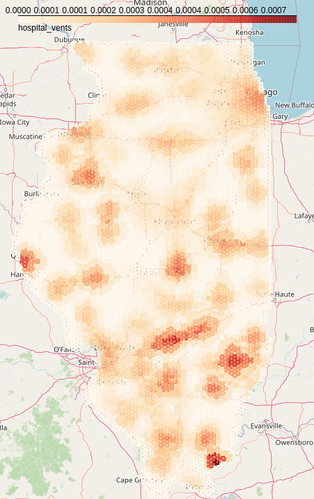

Model Gallery¶
Hello World¶
Our simple “Hello World” model is available on Github: cybergis/cybergis-compute-hello-world
COVID-19 Spatial Accessibility¶
{kind=link}
The COVID-19 Spatial Accessibility model (covid-access) uses CyberGIS-Compute to calculate spatial accessibility to hospital ventilators for the entire state of Illinois. It does this using the OpenStreetMap road network for Illinois, a dataset of hospitals, and population data. The model calculates travel-time catchments around each hospital on the OpenStreetMap road network and uses those catchments to calculate spatial accessibility. The work uses code from the following paper:
Kang, JY., Michels, A., Lyu, F. et al. Rapidly measuring spatial accessibility of COVID-19 healthcare resources: a case study of Illinois, USA. Int J Health Geogr 19, 36 (2020). https://doi.org/10.1186/s12942-020-00229-x
Github Repository: cybergis-compute-spatial-access-covid-19
Related Publication: “Rapidly measuring spatial accessibility of COVID-19 healthcare resources: a case study of Illinois, USA”
Pysal Access¶

This model (pysal-access) uses the Pysal access Python package to calculate accessibility to doctors using a variety of different metrics in Chicago, IL. Those interested should check out the paper on the package by Saxon et. al.
Github Repository: cybergis/pysal-access-compute-example
Notebook on CyberGISXHub: Pysal Access Compute Example
Remote Sensing Image Fusion Model¶

Remote sensing data fusion has been extensively studied to generate high spatial- and temporal- resolution data products by integrating high-spatial-low-temporal resolution (such as Landsat) and high-temporal-low-spatial-resolution images (such as MODIS). In this model, we utilize a robust hybrid deep learning model based on a super-resolution convolutional neural network (SRCNN) and long short-term memory (LSTM) for spatiotemporal data fusion to integrate Landsat images with MODIS. The work uses code from the following paper:
Fangzheng Lyu, Zijun Yang, Zimo Xiao, Chunyuan Diao, Jinwoo Park, and Shaowen Wang. 2022. CyberGIS for Scalable Remote Sensing Data Fusion. In Practice and Experience in Advanced Research Computing (PEARC ‘22). Association for Computing Machinery, New York, NY, USA, Article 35, 1-4. https://doi.org/10.1145/3491418.3535145
Github Repository: cybergis/data_fusion
DOI for Paper: 10.1145/3491418.3535145
Related Publication: A Robust Hybrid Deep Learning Model for Spatiotemporal Image Fusion
SUMMA¶
The Structure for Unifying Multiple Modeling Alternatives (SUMMA) hydrological modeling framework can be run with CyberGIS-Compute:
Github Repository: cybergis/cybergis-compute-v2-summa
Hydroshare Resource: Implementation of SUMMA model using CyberGIS-Compute V2
Notebook on CyberGISXHub: Run ensemble SUMMA 3.0 model on HPC with CyberGIS-Compute Service on CJW
WRF-Hydro¶
The Weather Research and Forecasting Model Hydrological modeling system (WRF-Hydro) is a multi-scale framework for modeling hydrological processes.
Github Repository: cybergis/cybergis-compute-v2-wrfhydro
Notebook on CyberGISXHub: Run National Water Model (WRFHydro) on HPC through CyberGIS-Compute Service